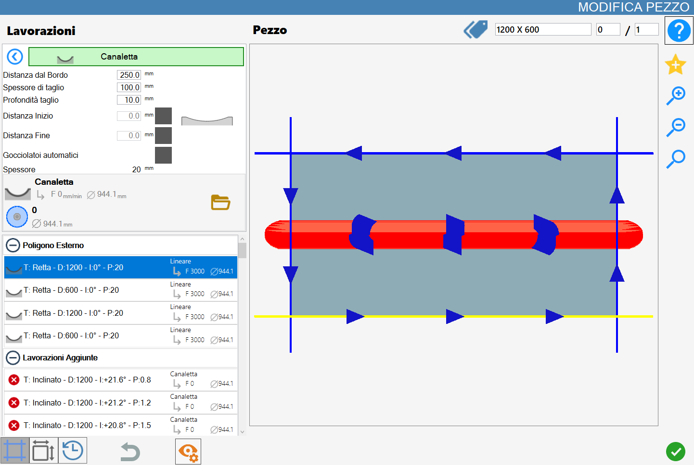
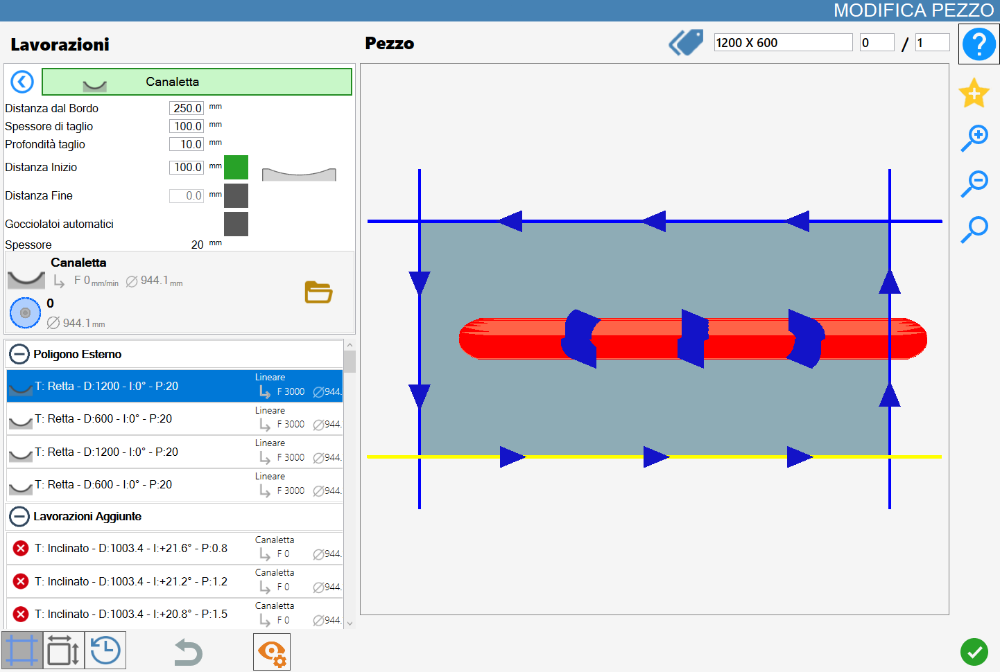
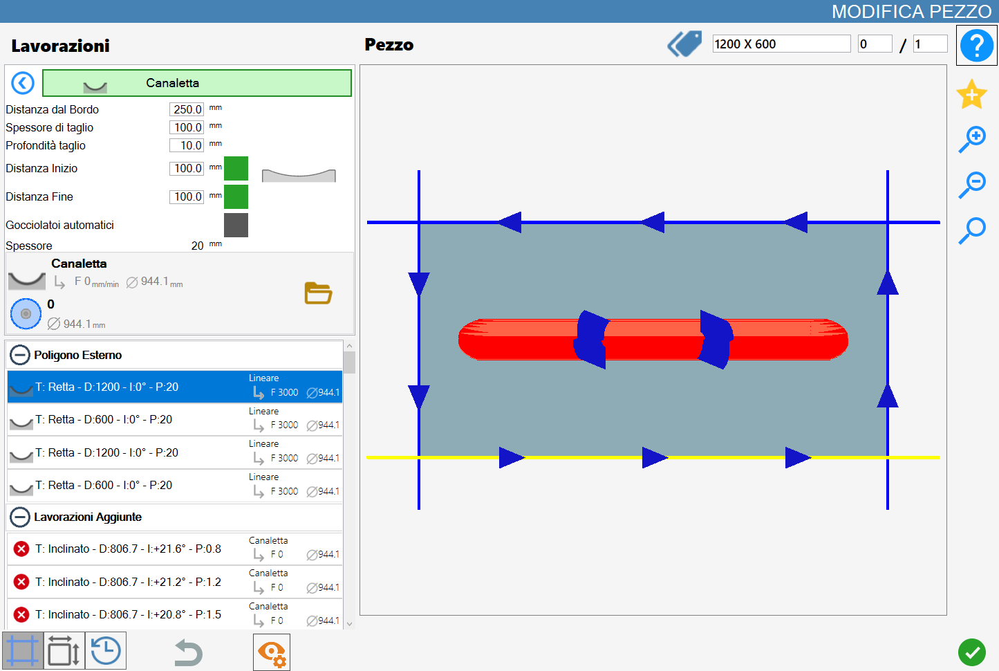
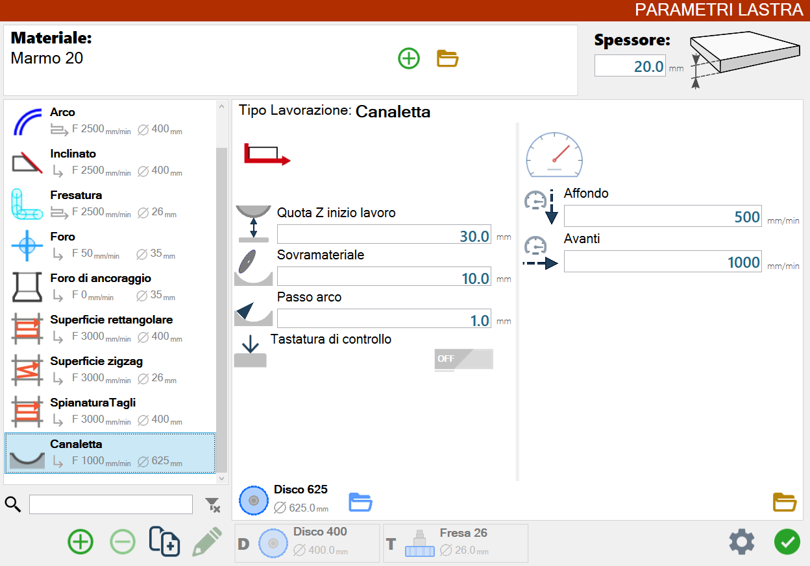
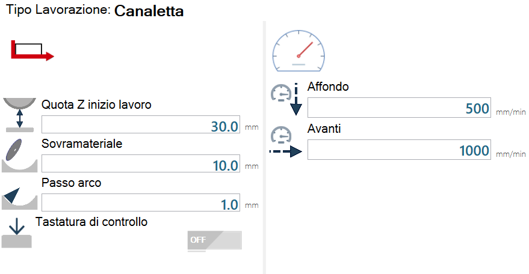
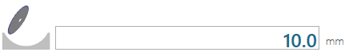
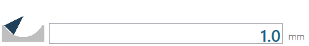

Questa funzionalità permette all’operatore di aggiungere una canaletta in una zona del pezzo.
L’interfaccia per questa funzione assomiglia alla seguente immagine:
/1.0-20250704-082817.png)
Parametri
Distanza dal bordo | L’operatore deve inserire la distanza in mm che vuole da uno dei bordi del pezzo. |
Spessore di taglio | L’operatore deve inserire lo spessore in mm della lavorazione della canaletta. |
Profondità di taglio | L’operatore deve inserire la profondità in mm della lavorazione della canaletta. |
Distanza Inizio | L’operatore può inserire la distanza in mm dal taglio di riferimento della canaletta. |
Distanza Fine | L’operatore può inserire la distanza in mm dal taglio di riferimentodel pezzo della canaletta. |
Gocciolatoi automatici | L’operatore può decidere se far creare in automatico dei gocciolatoi sul pezzo dopo aver creato la canaletta. |
Spessore | Spessore del materiale. |
Distanza inizio, distanza fine e gocciolatoi automatici possono essere attivi o spenti con i pulsanti sulla destra del valore.
In caso siano spenti, Parametrix non ne tiene conto, mentre quando sono attivi, il programma calcola lo spostamento.
Esecuzione della lavorazione
Canaletta con distanza di inizio e di fine disabilitate
La canaletta viene creata ad una distanza di 250mm dal taglio selezionato e si distende per tutta la lunghezza del pezzo con uno spessore della lavorazione di 100mm e una profondità di taglio di 10mm.

Canaletta con distanza di inizio abilitata e distanza di fine disabilitata
La canaletta viene creata ad una distanza di 250mm dal taglio selezionato, con uno spessore della lavorazione di 100mm e una profondità di taglio di 10mm.
Come si può vedere avendo messo una distanza di inizio di 100mm, la canaletta inizia a 100m dal taglio selezionato.

Canaletta con distanza di inizio disabilitata e distanza di fine abilitata
La canaletta viene creata ad una distanza di 250mm dal taglio selezionato, con uno spessore della lavorazione di 100mm e una profondità di taglio di 10mm.
Come si può vedere avendo messo una distanza di fine di 100mm, la canaletta finisce a 100m dal taglio selezionato.
/1.4-20250704-094210.png)
Canaletta con distanza di inizio e di fine abilitata
La canaletta viene creata ad una distanza di 250mm dal taglio selezionato, con uno spessore della lavorazione di 100mm e una profondità di taglio di 10mm.
Come si può vedere avendo messo una distanza di inizio di 100mm e una distanza di fine di 100mm, la canaletta inizia e finisce a 100m dal taglio selezionato.

Canaletta con gocciolatoi automatici abilitati
Vengono aggiunti automaticamente dei gocciolatoi sul pezzo (per i gocciolatoi vedi capitolo 3.12.2).
I gocciolatoi si posizionano a metà strada tra la canaletta e il taglio più vicino.
/1.6-20250704-094324.png)
Parametri di lavorazione della lastra
L’operatore può modificare i parametri legati alle canalette dal pannello dei parametri di lavorazione della lastra.

Lavorazione con passate singole
Questa schermata mostra i parametri di lavorazione con passate singole.

Descrizione dei parametri
/2.04.png) | Quota Z inizio lavoro |
 | Sovramateriale |
 | Passo arco |
/2.07.png) | Tastatura di controllo |
Lavorazione con passate a step
Questa schermata mostra i parametri di lavorazione con passate a step.
/2.02.png)
Descrizione dei parametri
/2.03.png) | Avanti |